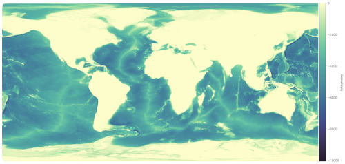

Topography Tasks
The polaris.tasks.e3sm.init.topo module provides tools for working with
topography data in Polaris. This includes steps for processing, modifying, and
combining topography datasets to create inputs for E3SM components such as
MPAS-Ocean. The framework is designed to handle both global and regional
datasets, supporting various grid types like lat-lon and cubed-sphere grids.
Combine Steps and Tasks
{kind=link}
Global datasets of base elevation (land surface elevation and ocean bathymetry) do not typically include the latest datasets around Antarctica needed for ice-sheet and ice-shelf modeling. For this reason, we typically combine a global topography dataset north of the Southern Ocean with one for Antarctica.
The polaris.tasks.e3sm.init.topo.combine.CombineStep step is a key
component of the topography framework. It is responsible for combining global
and Antarctic topography datasets into a single dataset suitable for use in
E3SM simulations. The step supports blending datasets across specified latitude
ranges and remapping them to a target grid.
The polaris.tasks.e3sm.init.topo.combine.CombineTask wraps the
CombineStep into a task that can be used to generate and cache combined
topography datasets for reuse in other contexts.
The polaris.tasks.e3sm.init.topo.combine.VizCombinedStep step is
an optional visualization step that can be added to the workflow to create
plots of the combined topography dataset. This step is particularly useful for
debugging or analyzing the combined dataset.
High-Resolution and Low-Resolution Versions
There are two versions of the combine steps and task:
Standard (High-Resolution) Version: This version maps to a high-resolution (ne3000, ~1 km) cubed-sphere grid by default, producing topogrpahy that is suitable for remapping to standard and high-resolution MPAS meshes (~60 km and finer).
Low-Resolution Version: This version uses a coarser ne120 (~25 km) grid for faster remapping to coarse-resolution MPAS meshes (e.g., Icos240). It is designed to reduce computational cost while still providing adequate accuracy for low-resolution simulations used for regression testing rather than science.
The low-resolution version can be selected by setting the low_res parameter
to True when creating the CombineStep or CombineTask.
Key Features
Dataset Support: Supports multiple datasets, including
bedmap3,bedmachinev3, andgebco2023.Grid Types: Handles both lat-lon and cubed-sphere target grids.
Blending: Blends global and Antarctic datasets across a configurable latitude range.
Remapping: Uses tools like
mbtempest,ESMF_RegridWeightGenandncremapfor remapping datasets to the target grid.Output: Produces combined topography datasets with consistent variables and attributes.
Visualization: Generates rasterized images of various fields (e.g., base elevation, ice draft) using the
datashaderlibrary.
Configuration Options
The CombineStep step is configured through the [combine_topo] section in
the configuration file. Key options include:
resolution_latlon: Target resolution for lat-lon grids (in degrees).resolution_cubedsphere: Target resolution for cubed-sphere grids (e.g.,3000for NExxx grids).latminandlatmax: Latitude range for blending datasets.ntasksandmin_tasks: Number of MPI tasks for remapping.method: Remapping method (e.g.,bilinear).lat_tilesandlon_tiles: Number of tiles to split the global dataset for parallel remapping.renorm_thresh: Threshold for renormalizing Antarctic variables during blending.
For the low-resolution version, additional configuration options are provided
in the combine_low_res.cfg file.
Workflow
Setup: The step downloads required datasets and sets up input/output files.
Modification: Antarctic and global datasets are modified to include necessary variables and attributes.
Remapping: Datasets are remapped to the target grid using SCRIP files and weight generation.
Blending: The datasets are blended across the specified latitude range.
Output: The combined dataset is saved in NetCDF format.
Optional Field Plotting: Each field in the dataset is rasterized and saved as an image with a colorbar.
Example Usage
Below is an example of how the CombineStep can be added to a Polaris
task:
from polaris.tasks.e3sm.init.topo.combine import CombineStep
component = task.component
subdir = CombineStep.get_subdir(low_res=False)
if subdir in component.steps:
step = component.steps[subdir]
else:
step = CombineStep(component=component, low_res=False)
component.add_step(step)
task.add_step(step)
To create a CombineTask for caching combined datasets:
from polaris.tasks.e3sm.init.topo.combine import CombineTask
combine_task = CombineTask(component=my_component, low_res=False)
my_component.add_task(combine_task)
Below is an example of how the VizCombinedStep can be added to a Polaris task:
from polaris.tasks.e3sm.init.topo.combine import VizCombinedStep
viz_step = VizCombinedStep(component=my_component, combine_step=combine_step)
my_component.add_step(viz_step)
Since there is a single shared step for each pair of Antarctic and global
datasets, the step should be added only once to the component and the existing
step (identifiable via its subdir) should be used subsequently.
The VizCombinedStep is typically added only when visualization is explicitly required, as it is not part of the default workflow.
For more details, refer to the source code of the
polaris.tasks.e3sm.init.topo.combine.CombineStep and
polaris.tasks.e3sm.init.topo.combine.CombineTask classes.
Note
Since this step is expensive and time-consuming to run, most tasks will want to use cached outputs from this step rather than running it in full.
Remapping Topography to MPAS Base Meshes
The e3sm/init component includes a workflow for remapping combined topography
datasets to MPAS base meshes at a range of resolutions. This process ensures
that bathymetry, land-ice thickness, and related fields are accurately mapped
from the cubed-sphere grid onto the unstructured MPAS mesh used in E3SM
simulations.
Remapping Workflow Overview
The remapping workflow is composed of several modular steps, each responsible for a specific part of the process:
Masking: The
polaris.tasks.e3sm.init.topo.remap.MaskTopoStepapplies ocean and land masks to the combined topography dataset on the cubed-sphere grid. This step generates masked versions of all topography fields, as well as fractional land and ocean coverage.Remapping: The
polaris.tasks.e3sm.init.topo.remap.RemapTopoStepremaps the masked topography fields from the cubed-sphere grid to the MPAS mesh. This step can be run with or without smoothing, depending on configuration.Smoothing: Smoothing is optionally applied during remapping. The workflow supports both unsmoothed and smoothed topography, with the smoothed step depending on the unsmoothed results.
Visualization: The
polaris.tasks.e3sm.init.topo.remap.VizRemappedTopoStepcan be added to generate plots of the remapped fields for quality control.
The polaris.tasks.e3sm.init.topo.remap.RemapTopoTask orchestrates these steps for each supported MPAS base mesh.
Step Dependencies
The typical dependency chain is:
CombineStep(combines global and Antarctic topography)MaskTopoStep(applies land/ocean masks)RemapTopoStep(remaps to MPAS mesh, optionally with smoothing)VizRemappedTopoStep(optional visualization)
Configuration Options
The remapping steps are configured through the [remap_topography] section in
the configuration file. Key options include:
ntasksandmin_tasks: Number of MPI tasks for remapping.renorm_threshold: Fractional threshold for renormalizing elevation variables.expand_distanceandexpand_factor: Smoothing parameters (set to 0 and 1 for no smoothing).Additional options for visualization colormaps and normalization.
For the low-resolution version, additional configuration options are provided
in the remap_low_res.cfg file.
Workflow
Masking: The
MaskTopoStepapplies land and ocean masks to the combined topography dataset, producing masked fields and fractional coverage variables.Remapping: The
RemapTopoStepremaps the masked topography fields to the MPAS mesh. If smoothing is enabled, both unsmoothed and smoothed steps are created, with the smoothed step depending on the unsmoothed output.Smoothing: Smoothing parameters are controlled via configuration. If no smoothing is requested, the smoothed step simply symlinks the unsmoothed results.
Visualization: The
VizRemappedTopoStepcan be added to plot each remapped field using configuration-driven colormaps and normalization.Output: The final remapped topography is saved as
topography_remapped.ncfor each mesh and smoothing option.
Example Usage
Below is an example of how the remapping steps can be added to a Polaris task:
from polaris.tasks.e3sm.init.topo.remap import get_default_remap_topo_steps
steps, config = get_default_remap_topo_steps(
component=component,
base_mesh_step=base_mesh_step,
combine_topo_step=combine_topo_step,
low_res=low_res,
smoothing=True,
include_viz=True,
)
for step in steps:
component.add_step(step)
To add the full remapping workflow as a task for each supported mesh:
from polaris.tasks.e3sm.init.topo.remap import add_remap_topo_tasks
add_remap_topo_tasks(component)
This will add a RemapTopoTask for each supported base mesh, including all necessary steps (masking, remapping, smoothing, and optional visualization).
Example: Ocean Fraction on Icos480km Mesh
Below is an example of the ocean fraction field (ocean_frac) remapped
to the Icos480km MPAS mesh:
{kind=link}
This field indicates the fraction of each MPAS cell that is covered by ocean after remapping, which is important for subsequent steps such as mesh culling and mask generation.
Customization
Remapping options, including smoothing parameters and the number of MPI tasks,
are controlled via the [remap_topography] section in the configuration file.
The workflow supports both unsmoothed and smoothed topography, and can generate
visualizations for each remapped field.
For more details, see the source code for
polaris.tasks.e3sm.init.topo.remap.RemapTopoTask and related steps,
as well as the configuration files remap.cfg and remap_low_res.cfg.
Extending Masking and Smoothing Functionality
Developers may wish to customize how land/ocean masks are generated or how smoothing is applied during remapping. This can be accomplished by subclassing the relevant step classes and overriding their methods:
Customizing Mask Generation
To implement a custom approach for generating land and ocean masks, create a
subclass of polaris.tasks.e3sm.init.topo.remap.MaskTopoStep and
override the define_masks() method. This method receives an xarray.Dataset
and should return two xarray.DataArray objects representing the ocean and land
masks, respectively.
Example:
from polaris.tasks.e3sm.init.topo.remap import MaskTopoStep
class MyCustomMaskStep(MaskTopoStep):
def define_masks(self, ds):
# Custom logic for mask generation
ocean_mask = ... # compute ocean mask as DataArray
land_mask = ... # compute land mask as DataArray
return ocean_mask, land_mask
You can then use your custom step in place of the default MaskTopoStep when constructing your workflow.
Customizing Smoothing Behavior
To implement custom smoothing logic, subclass
polaris.tasks.e3sm.init.topo.remap.RemapTopoStep and override the
define_smoothing() method. This method receives the unsmoothed topography
dataset and should return the expand_distance and expand_factor (either as
scalars or xarray.DataArray objects) to control the smoothing applied during
remapping.
Example:
from polaris.tasks.e3sm.init.topo.remap import RemapTopoStep
class MyCustomRemapStep(RemapTopoStep):
def define_smoothing(self, ds_unsmoothed):
# Custom logic for spatially varying smoothing
expand_distance = ... # scalar or DataArray
expand_factor = ... # scalar or DataArray
return expand_distance, expand_factor
This allows for advanced smoothing strategies, such as spatially varying parameters based on mesh properties or scientific requirements.
Integration
To use your custom steps, simply instantiate them in your workflow or override the step creation logic in your task or workflow setup.
For more details, refer to the docstrings and source code of
polaris.tasks.e3sm.init.topo.remap.MaskTopoStep and
polaris.tasks.e3sm.init.topo.remap.RemapTopoStep.